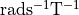
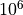
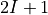
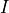
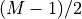

nmr_sims.nuclei¶
The module enables specification of nuclei for use in generating spin systems
(see nmr_sims.spin_system). A general Nucleus object allows
any nucleus (even imaginary ones) to be created. As well as this, there are numerous
pre-defined nuclei provided by supported_nuclei.
- nmr_sims.nuclei.supported_nuclei = {'13C': <nmr_sims.nuclei.Nucleus object>, '15N': <nmr_sims.nuclei.Nucleus object>, '19F': <nmr_sims.nuclei.Nucleus object>, '1H': <nmr_sims.nuclei.Nucleus object>, '2H': <nmr_sims.nuclei.Nucleus object>, '31P': <nmr_sims.nuclei.Nucleus object>}¶
- class nmr_sims.nuclei.Nucleus(name, gamma, multiplicity)[source]¶
An object representing the key properties of a nucleus for NMR simulation.
Create a
Nucelusinstance.- Parameters
name (
str) – The name of the nucleus. This can be anything, but really it should be astrof the form"<mass><element>", such as"1H","13C", etc.gamma (
float) – The gyromagnetic ratio of the nucleus in units of  (i.e. in accordance with the values in the first column in the table found at this link multiplied by ).multiplicity (
int) – The number of eigenstates produced as a result of the Zeeman effect. This is equivalent to , where  in the nuclear spin quantum number.
- __init__(name, gamma, multiplicity)[source]¶
Create a
Nucelusinstance.- Parameters
name (
str) – The name of the nucleus. This can be anything, but really it should be astrof the form"<mass><element>", such as"1H","13C", etc.gamma (
float) –The gyromagnetic ratio of the nucleus in units of (i.e. in accordance with the values in the first column in the table found at this link multiplied by ).
multiplicity (
int) – The number of eigenstates produced as a result of the Zeeman effect. This is equivalent to , where in the nuclear spin quantum number.
- property spin: float¶
Return the spin quantum number of the nucleus.
This is simply , where
 is the multiplicity.
is the multiplicity.- Return type
float
- property ssname: str¶
Return the name of the nucleus with superscript numerals.
- Return type
str